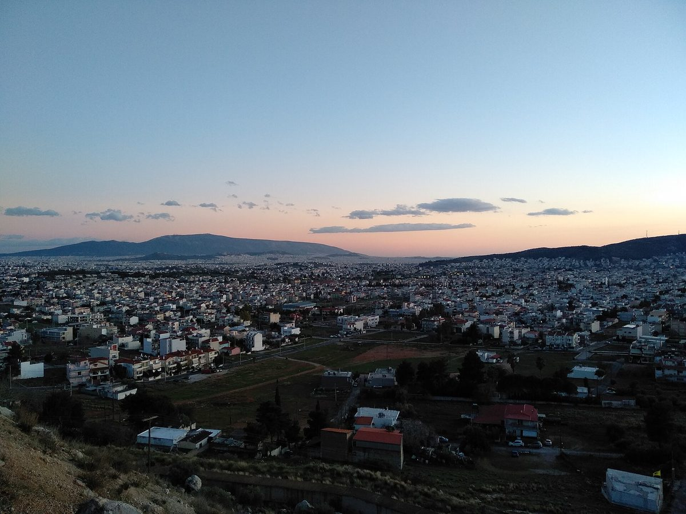

그리스 필리시, 시 태양광 전기로 저소득 1,000가구 무료 전기 이어 대학생 가정 1,000곳 넘게로 넓혀…학업 기간 4~6년

2022년 이후 입학해 재학 중인 학생의 가족 집이 대상, 의대 6년·공대 5년·일반 대학 4년…12월 21일 첫 무료 전기 바우처, 세부 조건은 곧 발표
그리스 아테네 서쪽 서아티키의 필리(Fyli)시가 대학생 자녀를 둔 가정 1,000곳 넘게에 학업 기간 동안 무료 전기를 주기로 했다. 흐리스토스 파푸스(Christos Pappous) 시장은 11월 4일 시의회 회의에서 이 계획을 밝혔으며, 2022년 이후 고등교육기관에 입학해 계속 재학 중임을 증명한 학생의 가족 집이 대상이고 자녀가 어느 도시에서 공부하든 관계없다. 혜택 기간은 의대 6년, 공대(폴리테크닉) 5년, 그 밖의 대학 4년이며, 첫 무료 전기 바우처는 12월 21일 해마다 열리는 합격 대학생 시상 행사에서 나눠 준다. 시에 따르면 형편이 어려운 1,000가구가 이미 시 태양광에서 나오는 전기로 무료 전기를 받고 있어, 두 대상이 겹치지 않는다면 혜택 가구는 2,000곳을 넘을 수 있다. 시장은 신청 절차와 서류는 시장실이 곧 공식 발표한다고 했고, 내년부터 결혼해 필리에 사는 새 부부에게도 무료 전기를 주겠다고 덧붙였다. 파푸스 시장은 "평생의 꿈을 오늘 실천한다"고 말했다.
시민에너지 관점
시가 가진 태양광의 전기를 형편이 어려운 가구와 학생 가정에 나눠 주는 것은, 공공이 만든 에너지의 이익을 주민 몫으로 직접 돌려주는 방식이다. 미국 알래스카주가 1982년부터 석유 수입으로 쌓은 영구기금에서 해마다 주민 모두에게 배당을 나눠 주듯, 공유 자원에서 나온 수익을 주민에게 나누는 일은 이미 오래 검증된 제도다. 시장 한 사람의 결정에 기대면 사람이 바뀔 때 혜택도 끊길 수 있다는 걱정이 나올 수 있는데, 그래서 발전 설비와 수익 배분 원칙을 조례와 주민 참여 구조로 묶어 두어야 한다. 국내 지자체도 공공부지·공공건물 태양광의 전기와 수익을 주민 에너지 기본소득으로 돌리는 제도를 서둘러 만들어야 한다.
출처: aftodioikisi.gr 2026-11-04 Μιχάλης Κοττάκης(미할리스 코타키스) 원문 보기
출처: doxthi.gr 2026-11-04 Μένη Πιρπινιά(메니 피르피니아) 원문 보기
창간 전 시험 발행 기사입니다.
ギリシャ・フィリ市、市の太陽光の電気で低所得1,000世帯に無料電力…大学生のいる家庭1,000世帯超に拡大、在学期間4～6年
2022年以降に入学し在学中の学生の家族の住まいが対象、医学部6年・工科大学5年・一般大学4年…12月21日に初の無料電力バウチャー、詳しい条件は近く発表
ギリシャ・アテネ西方の西アッティカにあるフィリ（Fyli）市が、大学生の子どもがいる1,000世帯を超える家庭に、在学期間中の電気を無料にすることを決めた。フリストス・パプス（Christos Pappous）市長が11月4日の市議会でこの計画を明らかにした。2022年以降に高等教育機関に入学し、在学を証明できる学生の家族の住まいが対象で、子どもがどの都市で学んでいるかは問わない。対象期間は医学部が6年、工科大学（ポリテクニック）が5年、その他の大学が4年で、最初の無料電力バウチャーは12月21日、毎年開かれる大学合格者の表彰行事で配られる。市によると、生活の苦しい1,000世帯がすでに市の太陽光発電の電気で無料電力を受けており、二つの対象が重ならなければ恩恵を受ける世帯は2,000を超えうる。市長は申請手続きと必要書類を市長室が近く正式に発表するとし、来年から結婚してフィリに住む新婚夫婦にも無料電力を提供すると付け加えた。パプス市長は「生涯の夢を今日実行に移す」と語った。
市民エネルギーの視点
市が持つ太陽光の電気を生活の苦しい世帯や学生のいる家庭に分けることは、公共がつくったエネルギーの利益を住民の取り分として直接返すやり方だ。米アラスカ州が1982年から石油収入を積み立てた永久基金から毎年すべての住民に配当を出しているように、共有資源から生まれた収益を住民に分けることは長く検証されてきた制度である。市長一人の決定に頼れば、人が代わったときに恩恵も途切れかねないという懸念もありうるが、だからこそ発電設備と収益配分の原則を条例と住民参加の仕組みで固めておく必要がある。韓国の自治体も、公有地や公共建物の太陽光の電気と収益を住民のエネルギー基本所得として還元する制度を急いでつくるべきだ。
出典: aftodioikisi.gr 2026-11-04 Μιχάλης Κοττάκης（ミハリス・コタキス） 原文を読む
出典: doxthi.gr 2026-11-04 Μένη Πιρπινιά（メニ・ピルピニア） 原文を読む
創刊前の試験発行記事です。
希腊菲利市用市属太阳能电力为1,000户低收入家庭免费供电后，再扩大到1,000多户大学生家庭…在学期间4至6年
对象为2022年以后入学且仍在读学生的家庭住宅，医科6年、理工5年、其他大学4年…12月21日发放首批免费电力券，具体条件近期公布
希腊雅典以西、西阿提卡的菲利（Fyli）市决定，为1,000多户有大学生子女的家庭在子女就读期间免费供电。市长赫里斯托斯·帕普斯（Christos Pappous）11月4日在市议会会议上公布了这一计划：对象是2022年以后考入高等院校、并能证明仍在读的学生的家庭住宅，不论子女在哪座城市就读。优惠期限为医科6年、理工院校5年、其他大学4年，首批免费电力券将于12月21日在每年一度的大学录取生表彰活动上发放。据市政府介绍，已有1,000户困难家庭通过市属太阳能发电的电力享受免费用电，如果两类对象不重叠，受益家庭可能超过2,000户。市长表示，申请程序和所需材料将由市长办公室近期正式公布，并补充说从明年起结婚并居住在菲利的新婚夫妇也将获得免费电力。帕普斯市长说："今天把一生的梦想付诸实践。"
市民能源视角
把市属太阳能的电分给困难家庭和学生家庭，是把公共生产的能源收益直接作为居民的份额返还。美国阿拉斯加州自1982年起，每年从用石油收入积累的永久基金中向全体居民发放分红，可见把公共资源产生的收益分给居民，是早已经过长期检验的制度。有人或许担心，依赖市长一人的决定，换了人福利就可能中断，正因如此，更应把发电设施和收益分配原则用条例和居民参与机制固定下来。韩国地方政府也应尽快建立制度，把公共用地和公共建筑太阳能的电力与收益作为居民能源基本收入返还。
来源: aftodioikisi.gr 2026-11-04 Μιχάλης Κοττάκης（米哈利斯·科塔基斯） 查看原文
来源: doxthi.gr 2026-11-04 Μένη Πιρπινιά（梅妮·皮尔皮尼亚） 查看原文
本文为创刊前试发行文章。
Greek municipality of Fyli, already giving 1,000 low-income homes free power from its own solar, extends free electricity to more than 1,000 students' families for 4 to 6 years
Families of students who entered higher education from 2022 and are still enrolled qualify: six years for medicine, five for polytechnics, four for other universities; first free-power vouchers on 21 December, full terms to be announced soon
The municipality of Fyli in West Attica, west of Athens, will give free electricity to more than 1,000 families with children at university for as long as they study. Mayor Christos Pappous announced the plan at a municipal council meeting on 4 November: it covers the family home of students who entered higher education from 2022 onward and can prove they are still enrolled, wherever they study. The benefit lasts six years for medical students, five for polytechnic students and four for other university students, and the first free-electricity vouchers will be handed out on 21 December at the municipality's annual ceremony honouring students who won university places. According to the municipality, 1,000 low-income households already receive free power using electricity from the municipality's own solar panels, so if the two groups do not overlap more than 2,000 households could benefit. The mayor said his office would soon publish the application procedure and required documents, adding that couples who marry from next year and live in Fyli will also get free electricity. "Today I am making a lifelong dream come true," Pappous said.
Citizen Energy View
Sharing electricity from municipal solar panels with struggling households and students' families returns the gains of publicly generated energy directly to residents as their share. Just as the US state of Alaska has, since 1982, paid every resident an annual dividend from a permanent fund built on oil revenue, sharing income from common resources with residents is a long-tested idea. Some may worry that a benefit resting on one mayor's decision could end when the mayor changes, which is exactly why the generating assets and the rules for sharing their proceeds should be anchored in local ordinances and resident participation. Korean local governments, too, should move quickly to turn power and income from solar on public land and buildings into an energy basic income for residents.
Source: aftodioikisi.gr 2026-11-04 Μιχάλης Κοττάκης (Michalis Kottakis) Read the original
Source: doxthi.gr 2026-11-04 Μένη Πιρπινιά (Meni Pirpinia) Read the original
This article was published during the trial period before launch.